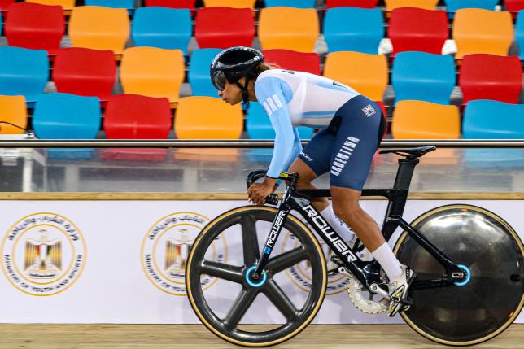

Culminó la participación de la Selección Argentina en El Cairo

En el cierre de la Copa de las Naciones de Pista, Lucas Vilar no pudo pasar la ronda clasificatoria en velocidad. Y en el keirin femenino, Natalia Vera fue cuarta en su serie y en el repechaje, mientras que Valentina Luna finalizó segunda en la serie y clasificó a cuartos de final, donde culminó en la quinta ubicación.